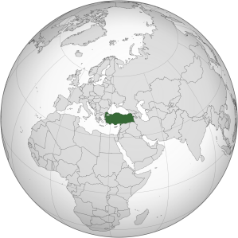
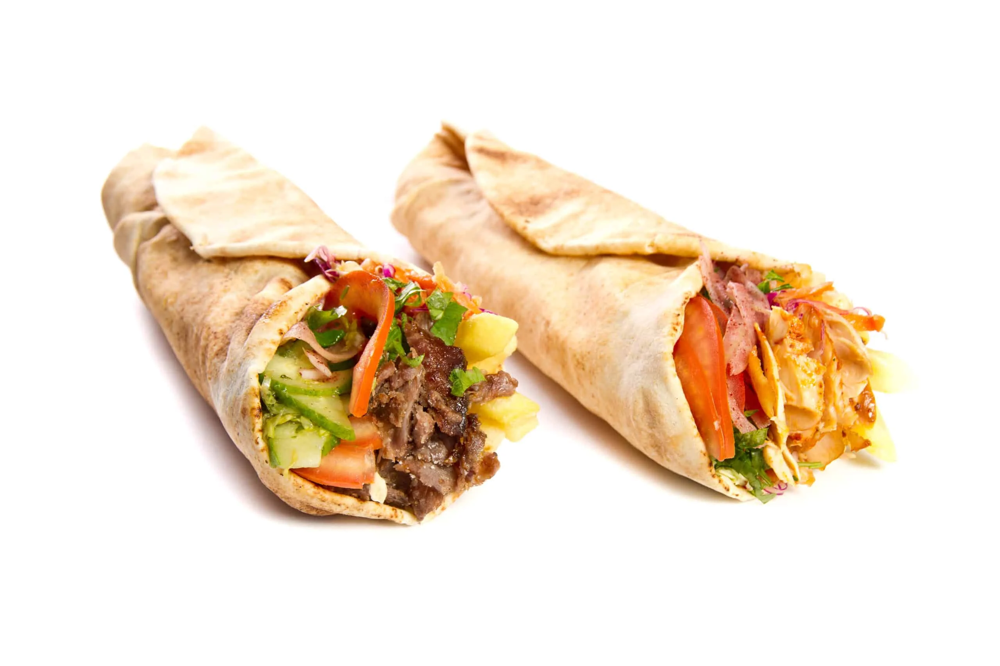
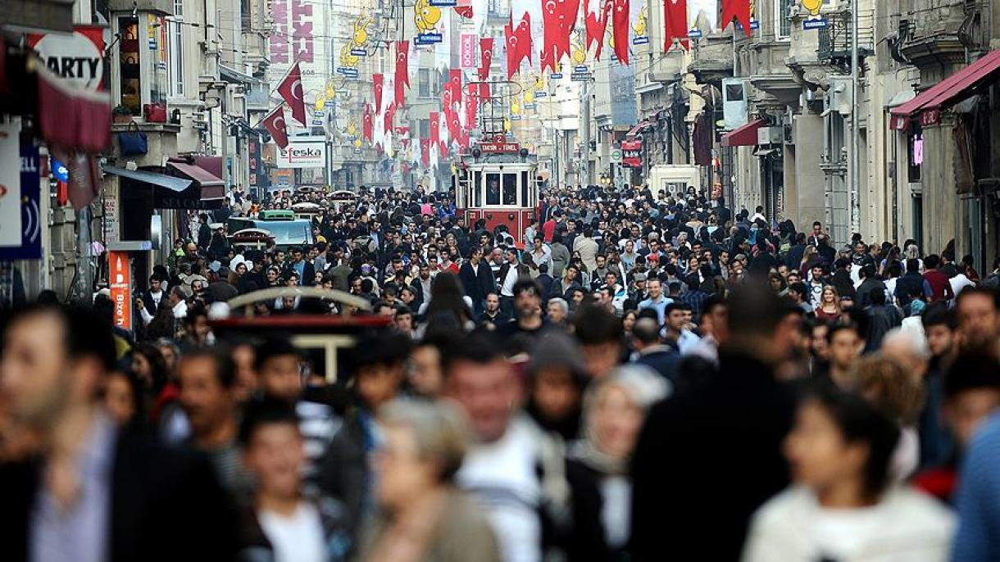

Localização:
A Turquia é um país localizado na região do oriente médio e também tendo partes regionais fazendo parte de dois continentes, Europa (Oriental) e Ásia (Ocidental).
Cultura:
A Turquia tem uma cultura rica e diversificada, resultado de séculos de influências de impérios como o Bizantino, o Otomano e as civilizações da Anatólia.
A Turquia é um país de maioria muçulmana, com cerca de 99% da população declarando-se islâmica. No entanto, é também um país secular.
Culinária:
A culinária turca é rica em especiarias e ervas. O uso de azeite de oliva, iogurte e vegetais frescos também é muito comum.
Algumas comidas: Kebab, Café Turco, Manti, Pide (Pão), Cafta ou Köfte, Lokum, Künefe.



Habitantes:
Em 2025, a população da Turquia é estimada em cerca de 87,68 milhões de pessoas. Representam cerca de 70–75% do total populacional.
Principais cidades: Ancara (capital), Istambul, Izmir, Bursa, Antália.
Curiosidades:
O Festival Internacional de Jazz de Izmir é realizado em março, reunindo artistas renomados. Shows ocorrem em locais abertos, inclusive no porto.
Feriados: Ramazan Bayramı, Kurban Bayramı, Dia da Soberania Nacional (23/04), Dia da República (29/10), entre outros.